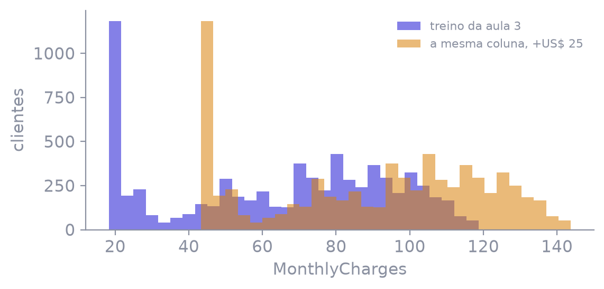
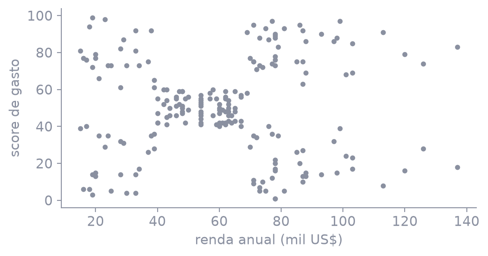
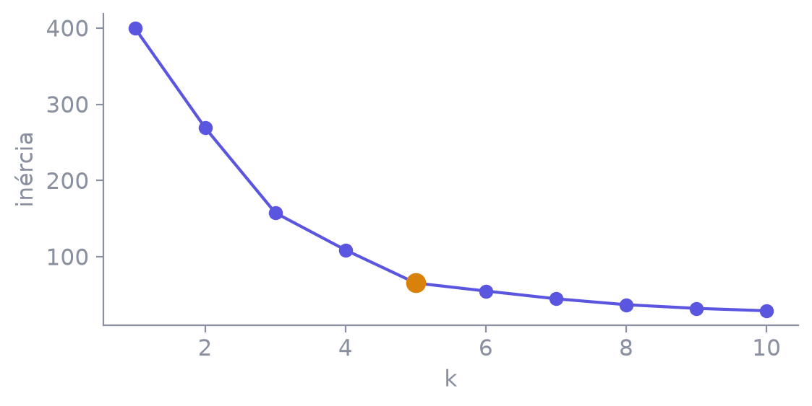
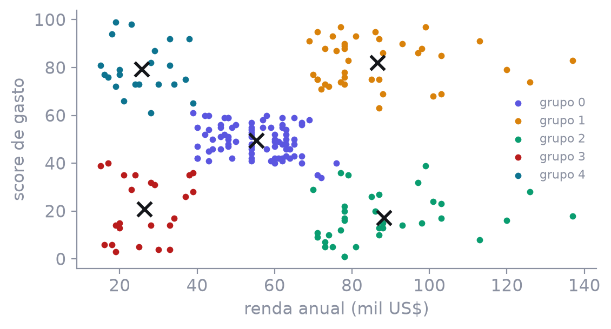

O churn da aula 3 vira um serviço.
200 clientes de shopping, sem coluna de resposta.
| recall de quem sai | precisão | acurácia | por que esta |
|---|---|---|---|
| 0,801 | 0,518 | 0,750 | deixar passar quem sai pesa mais |
modelos/churn é essa run, copiada para cá. A aula não retreina o churn. O corte 0,5 viaja dentro do serviço, para ninguém inventar outro na hora.customerID e sem Churn. O exemplo de hoje: tenure 1, contrato mensal, cobrança mensal 29,85.probabilidade_sai e sai, já no corte 0,5. Não é a classe crua do predict.Serviço, contrato, permanência, cobrança. TotalCharges entra como número. Célula vazia quebra o pedido — o imputador mora no modelo, mas o campo tem de existir.
mlflow models serve -m modelos/churn -p 5001 --no-conda
curl -s -X POST http://127.0.0.1:5001/invocations \
-H "Content-Type: application/json" \
-d @pedido.json{"probabilidade_sai": 0.851, "sai": 1}Model is missing inputs ['MonthlyCharges']
O arquivo pedido-incompleto.json tira essa coluna. O serviço recusa. Não devolve uma probabilidade educada no lugar do campo que faltou.

O deslocamento é desenhado, não é um arquivo novo de produção. Quando o dado novo se afasta assim, retreinar é repetir o ciclo das aulas 2 e 3 e registrar outra run. Não é editar o serviço à mão.
Uma linha do shopping não diz a qual grupo o cliente deveria pertencer. O trabalho é formar os grupos e nomeá-los pela posição do centro.

CustomerID não entra. Idade e gênero ficam de fora deste ajuste: duas colunas, para o grupo aparecer a olho. Não há teste, então a escala pode ficar fora do pipeline. Na aula 2 ela ia para dentro porque existia um teste que não podia vazar.

De 4 para 5 a inércia cai 43. De 5 para 6 cai 10. k é escolha de quem analisa. Este arquivo dobra em 5, e é o k que a aula adota.

| centro | n | leitura |
|---|---|---|
| renda 55 · score 50 | 81 | o meio da tabela |
| 87 · 82 | 39 | renda alta e score alto |
| 88 · 17 | 35 | renda alta e score baixo |
| 26 · 21 | 23 | renda baixa e score baixo |
| 26 · 79 | 22 | renda baixa e score alto |
Destino: Salvar como PDF. Margens: nenhuma. Gráficos de segundo plano: ativado.